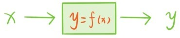
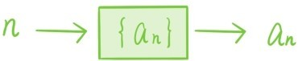

数列是由无限多个数从左到右排列而成的，比如正整数序列
1，2，3，4，5，6，7，8，9，10…
平方数列
1，4，9，16，25，36，49，64，81…
素数数列
2，3，5，7，11，13，17，19，23…
2的乘方数列
1，2，4，8，16，32，64，27，28，29…
数列的一般形式是
a1，a2，a3，a4，a5，a6，a7，a8，a9…
简写为{an}。数列可以像数一样相加，相乘
数列和数还可以做数乘运算
简单验证可以发现数列及其加法，数乘运算也满足向量及其加法，数乘运算的8条基本性质，所以所有数列也构成一个线性空间。
之前讲过，每个函数可以看成是一台机器，将每个输入的数x，按照一定的规则自动转化成另一个数y=f(x)输出。

数列也可以看成是一台关于数的转化机器，不同的是数列机器输入的数都是正整数n。

当依次输入1，2，3，…时，这种机器就会依次输出数列
a1，a2，a3，a4，a5，a6，a7…
所以当一个函数机器只允许输入正整数时，通常也可以看成一个数列，这时函数的表达式就变成关于正整数的表达式，称为数列的通项公式。
比如函数y=2x-1看成数列就是
1，3，5，7，9，11…
通项公式是an=2n-1；函数y=3x+2看成数列就是
5，8，11，14，17，20…
通项公式是an=3n+2。这两个数列的特征是相邻两项的差d=an-an-1是固定的。这样的数列称为等差数列，d=an-an-1称为公差。如果已知一个等差数列的首项是a，公差为d，那么可以断定通项公式是an=a+(n-1)d。
提问时间
10.1.1 令{an}和{bn}分别是公差为d1和d2的等差数列，k是一个固定实数，证明：{an}+{bn}和k{an}分别是公差为d1+d2和kd1的等差数列，再证明：所有等差数列也构成一个线性空间。
10.1.2 令s和t是两个固定实数，证明：所有满足an+2=san+1+tan，（n≥1）的数列构成一个线性空间，并指出这是10.1.1中最后一个结论的推广。